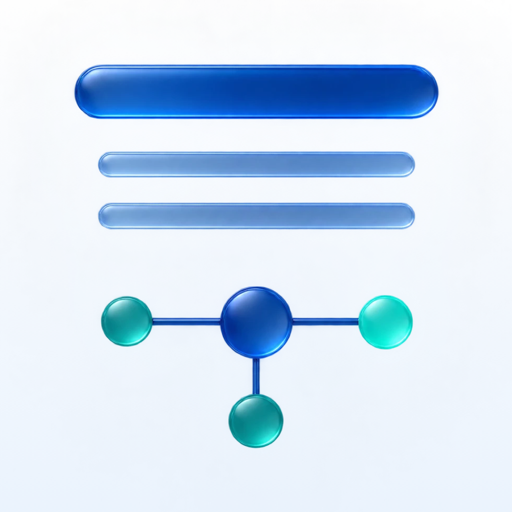
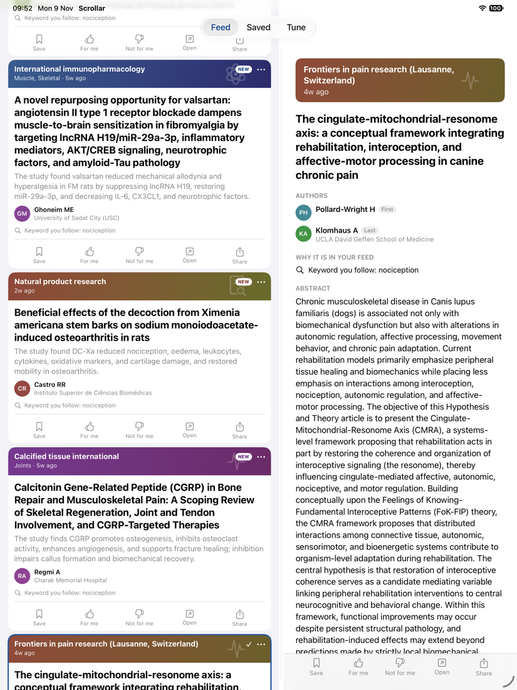

New research papers, ranked for you.
A feed for researchers. Scroll through what was published this week in the journals, topics, people and keywords you follow, ordered by how close each paper is to your own work, with the reason shown on every one.
More is published every week than anyone can read. Journal alerts are either too broad or too narrow, and a recommendation you cannot inspect is hard to trust. Scrollar is one feed you can scroll like a social feed, built from open scholarly data, where you can see and change exactly why a paper is in front of you.

You decide what counts. Nothing is followed unless you put it on a list.
Enter your ORCID iD, connect Zotero, paste or import references from EndNote, Mendeley or any reference manager, or paste a description of your project, such as a grant proposal, if you have no papers yet. Your own papers, your library and your project stand for what you work on.
Journals, topics, researchers, keywords, institutions and funders, with a preview of what a follow would bring in before you add it.
New papers are ranked by closeness to your work, what you follow and how recent they are. Add it to your reading list, mark it For me, or say Not for me, and the feed learns from it.
Each post says why it is there: an author you follow, a keyword, a topic from your own papers, a paper that cites your work. Tune shows the algorithm and its sliders, in the open and editable.
Matching uses your publications, your Zotero library or a reference export, the papers you put on your reading list, mark For me or hide, and how long you stay on one. A paper you have looked at stops coming back to the top.
A split view on iPad and Mac, with a draggable divider. Authors with their institutions, and a Details | PDF switch for papers with a free PDF. Free PDFs open in the reader where the publisher allows it. Opened PDFs are kept for offline reading, within a size limit you choose.
Under each title, written on your device by Apple's language model where it is available. Where it is not, for example in the EU, you can add your own Claude or ChatGPT key. Matching never needs either.
A filter panel groups what you kept by why it is relevant to you, such as a topic, an author or a journal you follow, and sorts by date kept, publication date or relevance.
Add to Zotero with the PDF attached and in the collection you choose. Share an EndNote file or a RIS file, copy the PDF or the reference, or drop the PDF into the folder a manager watches.
Follows, settings, your reading list and what you have read sync through one file in your own iCloud Drive. PDFs can share an iCloud Drive folder too. Back up and restore your settings to a file.
Scrollar has no server of its own and collects nothing. Your keys stay in the device Keychain and go only to the service they belong to. Read the privacy policy.
Europe PMC (which includes PubMed, MEDLINE and the preprint servers for biomedicine) needs nothing. Crossref (every DOI, with no key, used when OpenAlex is off) and arXiv (physics, mathematics and computer science, the day a paper is posted) and the Open Science Framework preprint servers (PsyArXiv, SocArXiv and others, which matter most in psychology and the social sciences) can be switched on in Tune. Thank you to arXiv for use of its open access interoperability. OpenAlex covers every field, and adds topics, authors by identifier and complete citations of your work; it needs a free key of your own from OpenAlex. A paper found by both is shown once, and a preprint and the article it became are one paper.
Scrollar shows titles, authors, abstracts and links. It does not host papers: a PDF comes from the publisher or repository that offers it free.
Scrollar is in active development and used daily by its author, and is being prepared for a public beta. It is one app for iPhone, iPad and Mac, with no third-party code. The source is published to read and to check what the app does with your data; it is not open source (see the licence).